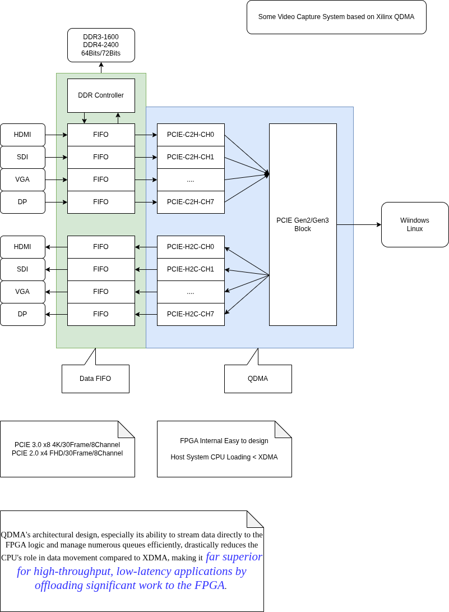
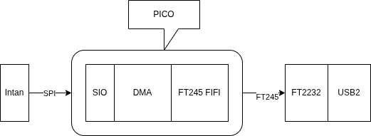
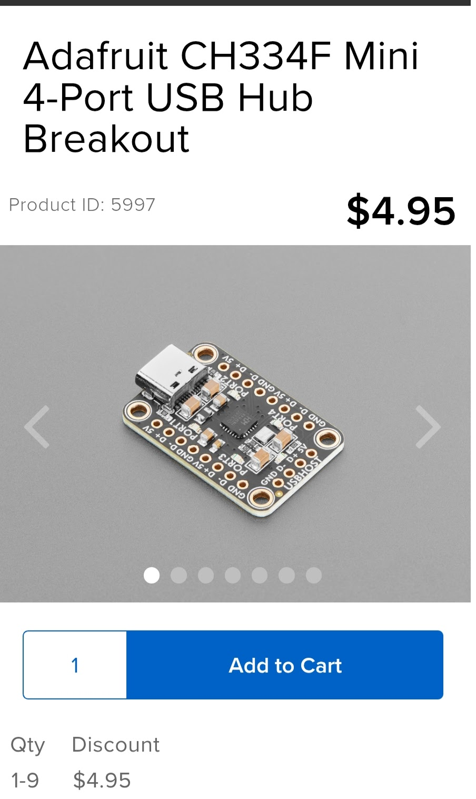
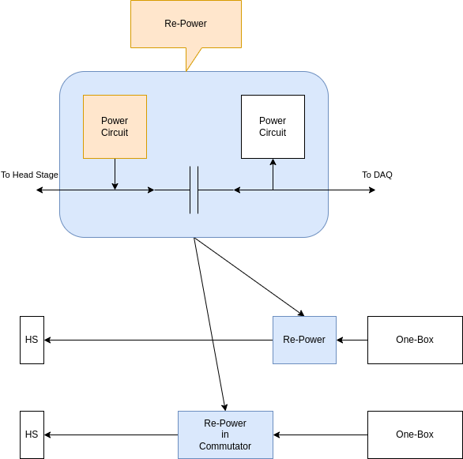
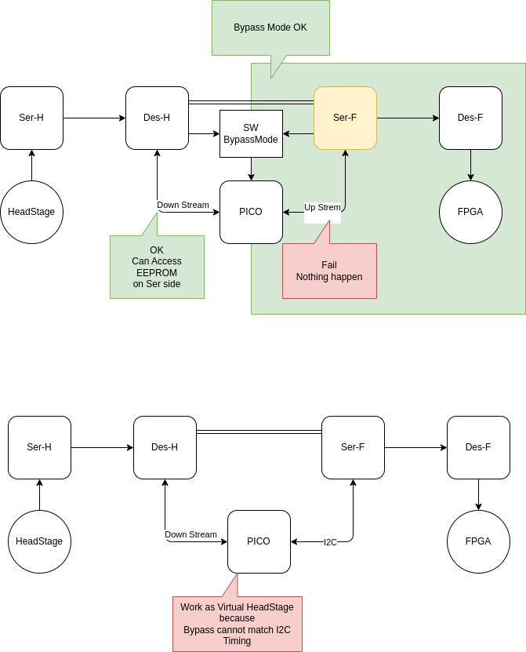
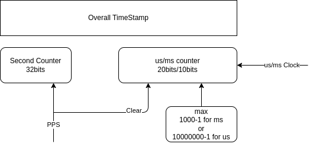

2025-12
2025-12-31
Signal Integrity Academy
Test in perfect enviroment will not able to learn our overall system design error on pickup rf noise ?
Wonder Works : Literary Invention and The Science of Stories

2025-151
Book to the rescure.
Quick Start Guide: FreeRTOS 11 and LVGL 9 on Raspberry Pi Pico
There are 500 cell types in our brain, no one can understand it. We need computer to help use understand
2025-12-30
ESP32 BT Reverse
ECE 476/676: Advanced Embedded Systems: Pico use Micropython
ECE 476/676: Advanced Embedded Systems
PCB Design Check List
DSP Course DSP First
True Differential , No need shield
PCB Layout suggestion from IC Company should consider wrong, before prove it right
Ground in PCB Layout - Separate or Not Separate? (with Rick Hartley)
Ground in PCB Layout - Separate or Not Separate? (with Rick Hartley)
Power Distribution Tips To Control SI, EMI and Noise-Rick Hartley
Micropython uctype
uctypes module allows access to arbitrary memory addresses of the machine (including I/O and control registers). Uncareful usage of it may lead to crashes, data loss, and even hardware malfunction.
Analog FPGA

2025-12-29
XDMA Notes
QDMA Tutorial
All-You-Need-to-Know-About-QDMA
PCB Ground Plane


2025-12-26
DDS AD9833

Rust UI Solution Tauri
Good Bye Electron, Hello Rust + Tauri! - Andreas Lillebø Holm - NDC TechTown 2025
QDMA
Multi-Channel PCIe QDMA Subsystem

Understanding the basics of AMD Queue-based Direct Memory Access (QDMA) Subsystem for PCI Express
Lattice Semi MachXO4 FPGA family
Lattice Semi MachXO4 FPGA family
FPGA Fabric
896 to 9400 LUTs
1,100 to 11,300 logic cells
Up to 150 MHz operation
-------------------------------------
Memory
Embedded RAM – 64 kb to 432 kb
Distributed RAM – 10 kb to 73 kb
Storage – 64 to 448 kb User Flash Memory (UFM)
-------------------------------------
I/O and peripherals
Up to 382 I/O pins
1x Phased Lock Loop (PLL)
Hardened functions: SPI, 2x I2C, timer/counter, and oscillator
Supports 3.3V – 1.0V I/O standards
時之輪14 光明回憶 下

最後兩本讀的比較詳細 一本約7-8小時
其他的 一本約4-5小時
因此共約 150小時
感覺跟玩第一輪 薩爾達曠野之息 差不多
剛剛開始時 完全不知道這是個什麽世界
等到最後 沈浸在裡面了 已經要結束了
不過 總是可以再讀一次 這次就能夠慢慢讀了
時之輪14 光明回憶 上

時之輪13 闇夜之塔 下

時之輪13 闇夜之塔 上

2025-12-24
Decibel Calculator
Scope use FT2232H + FPGA

PICO with TinyGo
2025-12-23
Voltage Drop Calculator
2025-12-22
人尋求解釋 人ㄧ生有很多問題
We have million dollar question. Not million dollar answer.
Xilinx DMA Driver
時之輪12 末日風暴 下

時之輪12 末日風暴 上

時之輪11 迷夢之刃 下

時之輪11 迷夢之刃 上

2025-12-18
RJ45 has No Ground without Transformer Coupling
Manchester Encode Decode
聖誕節麵包販賣
國賓 史多倫
老爺 潘那朵尼
新光三越 國王派
markdown editor
mdBook
mdBook is a command line tool to create books with Markdown. It is ideal for creating product or API documentation, tutorials, course materials or anything that requires a clean, easily navigable and customizable presentation.
Verilog Tutorial
2025-12-17
Rats Play Doom
Mistakes People Make When Designing Prototype PCBs
-
Designing for Production: • Design the first PCB expecting it to fail, focusing on functionality testing. • Size and shape considerations can come later; prioritize testing various features.
-
No Test Points: • Lack of test points hinders debugging and fixing mistakes. • Test pads for common functionalities reduce the risk of blocking progress.
-
No Power or Diagnostic LEDs: • Diagnostic lights for voltage levels and operations save time in identifying simple mistakes.
-
Overcrowding Components: • Avoid packing components tightly during prototyping; leave space for adjustments. • Keep passives relatively large for easier removal during testing.
-
Underutilizing Silk Screen: • Clearly label components on the silk screen for easy assembly and orientation. • Ensure markings are readable on the smallest boards.
-
Not Using Isolation Jumpers: • Incorporate zero-ohm resistors or cutable jumpers for easy isolation during testing. • Facilitates methodical bring-ups and simplifies troubleshooting.
-
Not Breaking Out Unused GPIOs: • Break out additional GPIOs for testing and fixing mistakes without ordering a new PCB. • Adds flexibility for rewiring components or integrating external modules.
-
UART Mixups: • Ensure correct pairing of transmit and receive pins in UART components. • Use jumpers or specific designs to easily correct mistakes.
-
Locking Into I2C Addresses: • Provide options to change I2C addresses using resistors for flexibility. • Prevents the need for a new PCB revision due to address conflicts.
-
Separate Power PCB: • Consider splitting the design into multiple boards, especially separating power. • Enables testing power solutions independently without scrapping the entire PCB.
-
Choosing Labeled Surface Mount Resistors: • Opt for labeled surface mount resistors for easier visual inspection and testing.
-
Verify Footprints: • Check dimensions on the data sheet against PCB footprints in your design software. • Prevents ordering the wrong footprint for components.
-
Check Parts Availability: • Consider part availability before designing the circuit. • Speculatively order critical parts before PCB production to mitigate shortages.


Bender
Bender is a dependency management tool for hardware design projects. It provides a way to define dependencies among IPs, execute unit tests, and verify that the source files are valid input for various simulation and synthesis tools.
CV32E40P is a 4-stage in-order 32-bit RISC-V processor core
CV32E40P is a 4-stage in-order 32-bit RISC-V processor core
Open Bus Interface (OBI) protocol
Open Bus Interface (OBI) protocol
Tutorial on Hyperdimensional Computing
Tutorial on Hyperdimensional Computing
Hyperdimensional computing: A fast, robust, and interpretable paradigm for biological data
Single Wire Network PJON/PJDL
PJON (Padded Jittering Operative Network) is an experimental, multi-master, software-defined network protocol that can be easily cross-compiled for many microcontrollers and real-time operating systems such as ATtiny, ATmega, SAMD, ESP8266, ESP32, STM32, Teensy, Raspberry Pi, Zephyr, Linux, Windows x86, Apple, and Android. PJON operates over a wide range of media, data links, and existing protocols like PJDL, PJDLR, PJDLS, Serial, RS485, USB, ASK/FSK, LoRa, UDP, TCP, MQTT, and ESPNOW. For more information, visit the documentation, the specification, or the wiki.
This is a hardware implementation of the PJDL data link. PJDL is a single-wire data link protocol and belongs to the PJON network protocol. This hardware module was writen as part of my bachelors project at ETH.
Python KiCad Scripting

kicad skip: S-expression kicad file python parser
2025-12-16
HDMI Specification


FPGA Developer Jeff Johnson

Corundum FPGA-based NIC
Corundum is an open-source, high-performance FPGA-based NIC and platform for in-network compute. Features include a high performance datapath, 10G/25G/100G Ethernet, PCI express gen 3, a custom, high performance, tightly-integrated PCIe DMA engine, many (1000+) transmit, receive, completion, and event queues, scatter/gather DMA, MSI, multiple interfaces, multiple ports per interface, per-port transmit scheduling including high precision TDMA, flow hashing, RSS, checksum offloading, and native IEEE 1588 PTP timestamping. A Linux driver is included that integrates with the Linux networking stack. Development and debugging is facilitated by an extensive simulation framework that covers the entire system from a simulation model of the driver and PCI express interface on one side to the Ethernet interfaces on the other side.
An Overview of a 10Gb Ethernet Switch
An Overview of a 10Gb Ethernet Switch
10G Ethernet Mac to Phy Interface


Verilog Signal Naming Guide
| Type of Signal | Suffix Prefix (optional) | Example |
|---|---|---|
| Clock signals | clk or _ck | sys_clk, clk |
| Reset signals | _rst or _reset | cpu_reset, rst |
| Active-low signals | _n or _x | reset_n, enable_x |
| Enable signals | _en | write_en |
| Input ports | i or _in i or in_ | data_in, i_valid |
| Output ports | o or _out o or out_ | data_out, o_ready |
| Registered signals | _reg o _r | count_reg, state_r |
| Next state signals | n_ | n_state |
Rotation Encoder

WCH-Link , Single Wire Debug


2025-12-15
時之輪10 光影歧路 下

2025-139
時之輪10 光影歧路 上

2025-138
時之輪9 寒冬之心 下

2025-139
時之輪9 寒冬之心 上

2025-138
FT2232 Serial Tools Tigard

Keyboard Scan I2C Chip TCA8418

2025-12-12
AI Tech
ANN Spike NN HDC/VSA Symbolic-NN
HDC VSA Notes
Hyperdimensional Computing with Applications. March 20th, 2023. 20:00GMT
Intan -> PICO -> USB

FT245 Pin (FTDI Synchronous 245 Tutorial)
output reg [7:0] data, // [7:0] = pins 1,2,3,4,9,10,11,12
input wire rx_empty, // pin 13
input wire tx_full, // pin 14
output reg read_n, // pin 19
output reg write_n, // pin 20
output reg send_immediately_n, // pin 21
input wire clock_60mhz, // pin 27
output reg output_enable_n, // pin 28
Pico to become a JTAG cable
This code allows the Pico to become a JTAG cable. It uses the PIO unit to produce and capture the JTAG signals.
PICO(USB1) PIO to FT2232 to PC (USB2)
2025-12-11
PythoC
PythoC is a Python DSL compiler that compiles statically-typed Python to LLVM IR, providing C-equivalent runtime capabilities with Python syntax and compile-time metaprogramming.
Raspberry Pi Pico frequency divider with External Sync
Raspberry Pi Pico frequency divider
iCE40 UltraPlus FPGA examples on the Breakout Board
Tiny Linux Core for X86
2025-12-10
Using RP2040 PIO to drive a poorly-designed display
Using RP2040 PIO to drive a poorly-designed display
時之輪8 匕之道 下

2025-137
時之輪8 匕之道 上

2025-136
時之輪7 劍之王冠 下

2025-135
時之輪7 劍之王冠 上

2025-134
2025-12-09
Use DPLL to Lock Digital Oscillator to 1PPS Signal
Use DPLL to Lock Digital Oscillator to 1PPS Signal
Ahsan:
The nature of the DPLL produces the nearest match to the configured operating frequency, while simultaneously locking to an external high precision signal such as the 1PPS signal output from an embedded GPS receiver. As you approach the Nyquist frequency of your oscillator (25MHz in your case), the NCO will produce the desired frequency (10MHz in your case) with greater variations in the duty cycle.
In this application, the oscillator (50MHz in your case) is not being adjusted in any way. Its frequency relative to the external reference is being measured, but its actual frequency / phase is not being physically changed. Therefore, the circuit will always produce an output with some period errors. On average, the period and frequency of the "programmed" output frequency of the circuit will be the desired value and in phase relative to the external reference signal, i.e., 1PPS from GPS.
The purpose of the circuit was measure the frequency of the oscillator, relative to the external input, by adjusting the frequency control word of the NCO / DDS. In this manner, if the external input signal is lost, the DPLL circuit can maintain time with a drift characteristic that is much improved from the basic drift characteristic of the reference oscillator. In this way, low cost standard crystal oscillators with frequency accuracies of +/-50ppm to +/-150ppm could be used to maintain time for several minutes / hours to GPS-like accuracy without a GPS 1PPS input.
If you require a 10MHz time stamp frequency with less period jitter, I would suggest that you need to increase the frequency of your base oscillator, i.e., increase the frequency of your 50MHz oscillator. The issue you will have, especially if you implement the DPLL in an FPGA as I did, is that the higher operating frequency of your reference oscillator will require greater performance from the NCO / DDS component.
There's always a trade off between simplicity and accuracy. If you absolutely need accuracy, then there's no escaping the need to form a true PLL using a temperature-stabilized, voltage-controlled, adjustable crystal oscillator. Unfortunately, in the application for which I developed the 1PPS DPLL described in this article, that complexity was not an option since the design was already complete before the requirement to coast through a GPS signal fade was levied on the design.
CH32V003 Test
Sinify 中國化
MIL-STD-1553 Manchaster Code Bus
2025-12-08
Nanomsg ZeroMQ's Succesor
nanomsg is a socket library that provides several common communication patterns. It aims to make the networking layer fast, scalable, and easy to use. Implemented in C, it works on a wide range of operating systems with no further dependencies.
NP Commutator
Motor Assisted Commutator to Harness Electronics in Tethered Experiments
The cable, PXI base-station card, and software are identical to that used for NP 1.0 (67), but described briefly here for completeness. The cable has two twisted strands (each with 0.41 mm diameter), is 5 m long, weighs 5 g, and terminates in a USB-C connector. (from NP paper)
As advancements in electrophysiology and optical technologies support a higher number of recording channels and more intricate miniaturized optical components, there is an increasing demand for motor-assisted commutators to effectively manage the thicker coaxial and specialized wire cables required for enhanced data transfer (Sattler and Wehr, 2021; van Daal et al., 2021). For example, the coaxial tether used between the Miniscope (v4) and the Miniscope DAQ (v3.3) has an outer diameter of either 0.38 mm (equivalent to ∼27 AWG) or 1.14 mm (equivalent to ∼17 AWG). The Neuropixels (1.0/2.0) interface cable consists of two 26 AWG wires twisted together, resulting in an effective diameter close to 0.578 mm, which approximates a 23 AWG wire. The tether used in this paper is composed of five 30 AWG wires braided into a single cord, resulting in an effective diameter of ∼0.548 mm, also equivalent to 23 AWG. The effective thickness of the tether used in this study is comparable with that of the Neuropixels interface cable, while being slightly thicker than the Miniscope's smaller coaxial tether. The second tether, the optical fiber compatible with optogenetics experiments, has a diameter of 0.105 mm or ∼38 AWG. Behavioral experiments in the open field arena and home cage which used both tethers wrapped around one another had a larger effective thickness. MACHETE's active mechanism, namely, the brushless motor and motor driver, is potentially equipped to handle thicker coaxial and specialized wire cables, reducing the mechanical strain during freely moving experiments.


Cypress USB3.2 20G FX20


USB 2.0 Hub Chip

2025-12-05
PoC Extender

ReDriver

PoE Extender
2025-12-04
Software Sync Paper TICSync
TICSync: Knowing When Things Happened
Time Card
ESP32 Wifi FTM as PTP
ESP32 S3: sub-microsecond time sync and disciplined timers
五玉牒
五個碟子 三藍兩綠 三個人頭上個一個 猜自己頭上的碟子
2025-12-03
Good EVB Design
All IO are expanded with Jumper.
時之輪6 混沌之王 下

2025-133
時之輪6 混沌之王 中

2025-132
時之輪6 混沌之王 上

2025-131
Repeater

2025-12-02
Proto-Thread Examples


AD623 as 1000x single power instrument Amp

2025-12-01
Fix15

PPS Counter

CopyParty : File Server for All

Copy-Paste Circuits for KiCad